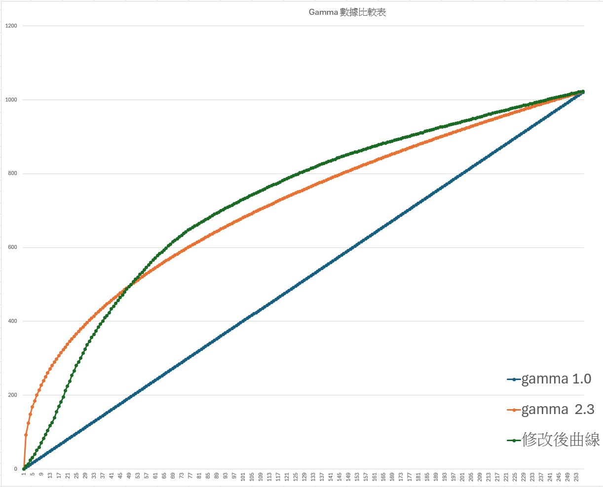

Gamma 曲線（Gamma Curve）的用途與計算方式
本文採用「觀念導入 $\rightarrow$ 實務用途 $\rightarrow$ 數學與硬體實現 $\rightarrow$ 工具實作演練」的四階段，說明 Gamma 曲線的原理、ISP 中的作用與實際調校方法。
第一階段：觀念導入 —— 為什麼需要 Gamma？

1. 核心前言：人眼與相機的根本差異
在影像處理（ISP）與畫質調整（IQ）的世界裡，我們常面臨一個根本的矛盾：
- 相機（Sensor）：是理性的物理感光元件，呈現「線性響應（Linear Response）」。
- 人眼（Human Eye）：是感性的生物視覺系統，呈現「非線性響應（Non-linear / Logarithmic Response）」。
如果我們不對影像做任何處理，直接把 Sensor 捕捉到的物理數據交給顯示器或人眼，畫面就會嚴重失真。而 Gamma 曲線就是連結這兩者最重要的橋樑。
2. 深入剖析：人眼與 Sensor 的特性
(1) 感光元件的線性世界（Linear World）
當光子打到 CMOS/CCD 感光元件時，產生的電荷或電壓與光強度呈正比關係。
- 假設光強度為 $1$，輸出訊號為 $1$。
- 光強度為 $2$（增加 $1$ 單位），輸出訊號就是 $2$。
- 光強度為 $100$（增加 $1$ 單位），輸出訊號就是 $100$。
特點：對電腦來說計算很簡單，但對人類視覺來說並不直覺。
(2) 人眼的對數世界（Logarithmic World）
人類大腦對亮度的感知遵循韋伯－費希納定律（Weber-Fechner Law），對暗部的變化極為敏感，對亮部則相對遲鈍。
- 白話解釋：在黑暗的房間裡開一盞小燈，你會覺得非常刺眼；但在陽光普照的戶外多開一盞同樣亮度的燈，你幾乎感覺不到差異。
- 結論：我們需要更多的「亮度級別（階調）」來分辨暗部細節，而亮部不需要分配那麼多資源。
3. 關鍵痛點：如果沒有 Gamma 會發生什麼事？
假設我們使用傳統的 10-bit 系統（總共有 $1024$ 個灰階級別）來記錄線性數據：
- 災難性的位元浪費：
- 物理上的「最高亮度」佔了總光子的一半（512 到 1024 階）。這意味著 50% 的數位位元（Bits）全用來記錄人眼不太敏感的高亮度區間。
- 留給暗部的空間被大幅壓縮，導致暗部層次盡失。
- 視覺呈現的結果：
- 畫面看起來不是暗部一片死黑（Crushed Shadows），就是亮部過曝、過渡生硬，甚至在漸層處出現明顯的色塊（Banding / 斷階現象）。
4. Gamma 的本質與價值
為了修復這個落差，工程師引入了 Gamma 編碼（Gamma Encoding）：
- 數學本質：利用非時變的指數函數（Power Law），在攝影端（或 ISP 內部）將線性數據進行壓縮。
- 資源重分配：把寶貴的數位位元從亮部「挪」一部分到暗部，讓暗部的階調變豐富、過渡變平滑。
- 視覺均勻性（Perceptual Uniformity）：確保相機記錄的明暗變化，在人眼看起來是均勻且自然的。
💡 重點摘要：Gamma 不是單純的「調亮」或「調暗」工具，它的本質是「人類視覺感知模型與物理感光數據之間的轉譯器」。
第二階段：核心用途 —— Gamma 在 ISP Pipeline 中的角色
在了解了人眼與感光元件的差異後，我們接著來看：在複雜的影像處理流程（ISP Pipeline）中，Gamma 究竟扮演什麼角色？它位於哪裡？又解決了哪些實際的畫質問題？

1. Gamma 在 ISP Pipeline 中的位置
在標準的 ISP（影像訊號處理）架構中，資料流通常分為 Linear Domain（線性域）與 Non-linear Domain（非線性域）：
- 前端處理（線性域）：
- 從 Sensor 輸出的原始資料（Raw Data），經過黑準位調整（BLC）、壞點修正（DPC）、鏡頭遮光補償（LSC）、白平衡（AWB）、Demosaicing（色彩濾鏡還原）以及色彩校正矩陣（CCM）。
- 特點：在這個階段，所有的數學運算（如顏色混色、濾波）都必須在線性空間中進行，否則會產生嚴重的色彩失真。
- 分水嶺 —— Gamma 轉換：
- 當資料準備轉為最終的 RGB 影像或輸出給顯示器前，必須透過 Gamma 曲線（或 Tone Curve）進行非線性轉換。
- 後端處理（非線性域）：
- 經過 Gamma 之後的影像，進入 2D/3D 降噪、銳化（Sharpening）、色調調整等，最終輸出。
2. Gamma 在 ISP 調校中的四大核心用途
在實際的畫質調校（IQ Tuning）工作中，調校工程師利用 Gamma / Tone 曲線主要能達到以下四個目的：
(1) 塑形整體的對比度與亮度（Contrast & Brightness）
- 原理：透過改變曲線的斜率（Slope），可以決定影像的視覺動態。
- 調校觀察：
- 中間調（Mid-tones）的斜率大於 1，會增加對比度，使畫面看起來更扎實、立體。
- 若曲線過於平緩，畫面則會顯得灰濛濛（低對比）。
(2) 暗部細節提升與高光保護（Shadow Details & Highlight Protection）
- 原理：透過自定義的曲線（Custom Tone Curve），工程師可以針對曲線的不同區段進行拉抬或壓抑。
- 實際應用：
- 逆光或夜景場景：將曲線的低端（暗部）向上拉抬，讓原本看不清的陰影細節顯現出來。
- 亮部壓抑：將曲線的高端向下壓或趨於平緩，防止天空或燈光等高亮度區域過曝（Clipping）。
(3) 確保色彩的視覺均勻性與飽和度
- 原理：因為人眼對明暗的非線性感知會連帶影響對色彩濃淡的判讀。
- 調校觀察：如果沒有正確的 Gamma 曲線支撐，暗部的色彩會看起來混濁、黯淡；經過適當的 Gamma 對齊後，色彩階調才會飽和且過渡自然。
(4) 符合業界顯示標準（Display Rendering / sRGB）
- 原理：絕大多數的螢幕、電視與網頁瀏覽器都預設採用約 $\gamma = 2.2$ 的標準來顯示影像。
- 調校意義：ISP 內部的 Gamma 補正，能確保相機拍出來的畫面，在各種標準顯示器上「所見即所得」，不會在別人的螢幕上變得過暗或過亮。
3. 實務調校的權衡與陷阱（工程師經驗談）
在 IQ Tool 調校 Gamma 時，必須注意以下兩點：
- 雜訊放大（Noise Amplification）：
- 當把暗部曲線向上拉抬時，暗部原本夾雜的 Sensor 雜訊（Noise）也會被等比放大。因此，「暗部細節」與「噪點多寡」永遠是互相拉鋸的權衡。
- 斷階與色塊（Banding）：
- 如果曲線的某些區段斜率過陡，會導致相鄰的位元階級跳太大，使天空等漸層色塊出現一圈一圈的斷階。此時就需要透過 Dither（抖色）技術或微調曲線弧度來解決。
💡 第二階段總結：Gamma 不只是數學公式，它是 ISP 中控制明暗對比、暗部細節、色彩質感與平台相容性的最強大武器。
第三階段：計算方式與硬體實現（從公式到 LUT）
在前兩階段中，我們了解了 Gamma 的「必要性」與在 ISP 中的「角色」。接下來，我們要探討工程師最關心的問題：Gamma 數值是怎麼算出來的？在寸土寸金、講求即時處理（Real-time）的晶片硬體中，又是如何被執行的？

1. Gamma 的數學計算方式
(1) 標準冪次函數（Power Law）
在數學上，Gamma 轉換的核心公式為：
為了方便在數位系統中運算，通常會將輸入（$V_{in}$）與輸出（$V_{out}$）進行正規化（Normalized），使其數值範圍落在 $0.0 \sim 1.0$ 之間：
- $V_{in} = 0.0$ 代表全黑（Black）。
- $V_{in} = 1.0$ 代表全白（White）。
(2) 實際應用中的指數區分
- 編碼端（Encoding / 攝影或傳輸端）：通常使用 $\gamma \approx 1/2.2 \approx 0.45$ 的次方進行壓縮，將線性訊號轉為非線性。
- 解碼端（Decoding / 顯示端）：顯示器通常會套用 $\gamma \approx 2.2$ 的次方將其還原。
- 兩者相乘：$(X^{1/2.2})^{2.2} = X^1$，剛好完美抵銷，還原出正確的線性光強度供人眼觀看。
- 在IQ Tool 中的計算：
- 基本計算公式
- 在影像處理與顯示器中，輸入值與輸出值的計算步驟如下：
- 1. 將輸入值標準化：將原本的像素或訊號範圍（例如 0 ~ 1023）除以最大值，轉換成 0 ~ 1 之間的浮點數 x。
- $(x_{normalized} = Input/1023)$
- 2. 代入 Gamma 冪函數：計算非線性對應值。
- $(y=x_{normalized}^{\gamma }\quad $ 或 $y=x_{normalized}^{1/\gamma }$ )視校正方向而定。
- 還原至原本的數值範圍**：將計算完的 y 乘回原範圍（如乘以 255）。
- $Output = y {X} 1023$
- 以常見的 **Gamma 2.2** 顯示器校正為例（校正公式 $Output = (Input/255)^{1/2.2} {X} 255$），當輸入值為 50 時，計算出的對應輸出亮度約為 121。

Excel 計算曲線圖
2. 工程上的大敵：為什麼不能直接用公式計算？
如果我們試著在晶片中用程式或電路直接即時計算 $V_{out} = V_{in}^{0.45}$，會遇到嚴重的工程障礙：
- 浮點數運算太貴：冪次方（Power）運算需要大量的邏輯閘（Logic Gates）來處理浮點數對數與指數轉換。
- 延遲與資源消耗（Latency & Area）：每個像素（Pixel）都要即時做這個複雜運算，會導致晶片面積暴增、功耗上升，且無法達到每秒 60 幀以上的即時處理速度（Real-time Processing）。
- 硬體實現的解法：尋址表（LUT, Look-Up Table）。為了克服運算效能瓶頸，硬體工程師採用了電腦科學中經典的「空間換取時間（Space-Time Tradeoff）」策略 —— LUT（Look-Up Table，尋址表）。
(1) LUT 的運作原理
- 預先計算：在軟體端（或晶片開機初始化時），事先用電腦把 0 到 1023（以 10-bit 為例）所有可能的輸入值，透過公式 $V_{in}^{0.45}$ 算好，並把結果整數化。
- 硬體查表：
- 當 Sensor 輸入一個像素值（例如像素值 = 512）時，這個數值不經過複雜計算，而是直接被當作硬體記憶體（SRAM）的「地址（Address）」。
- 晶片直接去讀取該地址對應儲存的數值（例如輸出值 = 735），並輸出。
- 優勢：查表動作只需要一個時脈週期（Clock Cycle），運算速度極快，且硬體實現非常簡單高效。
(2) 節點與內插（Interpolation / Control Points）
在實際的 IQ Tool 調校介面中，工程師不可能手動輸入 1023 個數值。通常介面會提供 16 點、32 點或 64 點的控制節點（Control Points）：
- 調校工程師拉動曲線上的這幾個關鍵節點。
- 軟體/韌體會透過線性內插法（Linear Interpolation），自動把中間所有遺失的數值補齊，生成完整的 LUT 並燒錄進硬體暫存器中。
💡 第三階段總結：Gamma 的數學公式雖然簡單（$V^{\gamma}$），但在晶片硬體中，我們是靠著 LUT（尋址表）與內插技術，實現了超高速、零延遲的即時畫質調整！
第四階段：工具實作與驗證 —— 結合 IQ Tool 與測試 AP
在前三階段中，我們掌握了 Gamma 的原理、ISP 角色與硬體 LUT 實現。最後一個階段，我們要帶領組員實際動手，結合 IQ Tool 平台與自研影像測試 AP，將抽象的曲線調整轉化為具體的量化驗證。

1. 實作任務目標
- 讓組員學會：如何在 IQ Tool 中針對不同場景（如戶外逆光、室內低光源）微調 Gamma / Tone 曲線。
- 結合測試 AP：透過自行開發的 AP（特別是 RAW view 與畫質檢測工具），客觀觀察調整前後的差異，避免僅憑主觀肉眼判斷。
2. 結合任務四：利用 AP 驗證 Gamma 的影響
在規劃開發的五大影像測試 AP 中，RAW view 與影像分析 AP 在調校 Gamma 時扮演關鍵角色：
(1) RAW View 階段（Linear 檢視）
- 操作觀念：在 AP 中載入未經過 Gamma 轉換的純 RAW 檔（Linear Domain）。此時畫面看起來會非常昏暗、灰暗，這是正常的。
- 教學重點：讓組員理解在 RAW 階段看見的影像與最終顯示器呈現的畫面不同，數學運算必須在此階段進行。
(2) 經過 Gamma 轉換後的 AP 檢視
- 套用 LUT：在 AP 中實作簡易的 Gamma 查找表或直接載入 ISP 導出的 LUT 檔案進行預覽。
- 量化指標觀察：配合規劃的 SFR（解像力）或 Color（色彩還原）測試 AP，觀察當 Gamma 曲線把暗部拉高時，是否會對邊緣對比（Contrast）或訊噪比（SNR）造成負面影響。
3. IQ Tool 實機操作與實驗演練
設計兩個具體的實作實驗，讓組員分組上機操作：
實驗一：暗部極限挑戰（平衡細節與雜訊）
- 情境：拍攝一張高對比（背光）的測試卡。
- 步驟：
- 試著大幅拉高 Gamma 曲線的低端（Shadow Lift）。
- 使用 RAW view 或預覽畫面觀察暗部是否成功變亮。
- 問題引導：請組員切換到局部放大圖，觀察暗部的雜訊（Noise）顆粒是否變得無法接受？
- 結論：讓組員體會調校工程沒有完美的「單一最佳解」，永遠需要在「細節可見度」與「畫面乾淨度」之間取捨。
實驗二：膚色與漸層階調確認
- 情境：拍攝人像或灰階階梯圖（Step Chart）。
- 步驟：
- 調整中間調（Mid-tones）的斜率。
- 觀察膚色是否變得過於死白或紅潤失真。
- 檢查背景的漸層區塊是否有出現明顯的「斷階（Banding / 色塊）」。
4. 總結與交接驗收
在完成這四個階段的教學後，您可以透過以下方式驗收組員的學習成果：
- 情境題考核：給予組員一個特定的失敗案例（例如：「夜景照片暗部太糊」或「逆光人臉太暗」），要求他們在 IQ Tool 中調整 Gamma 曲線並用 AP 提出佐證數據。
- 流程文件化：讓組員將調整的標準步驟寫入規劃的第一項工作（IQ Tool 調整流程編寫）中，實現技術傳承與標準化。